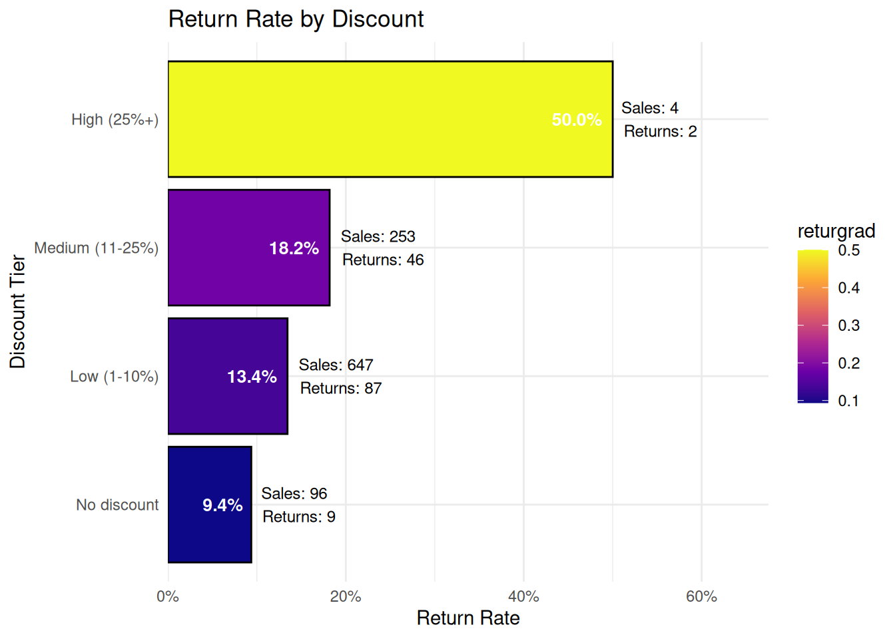
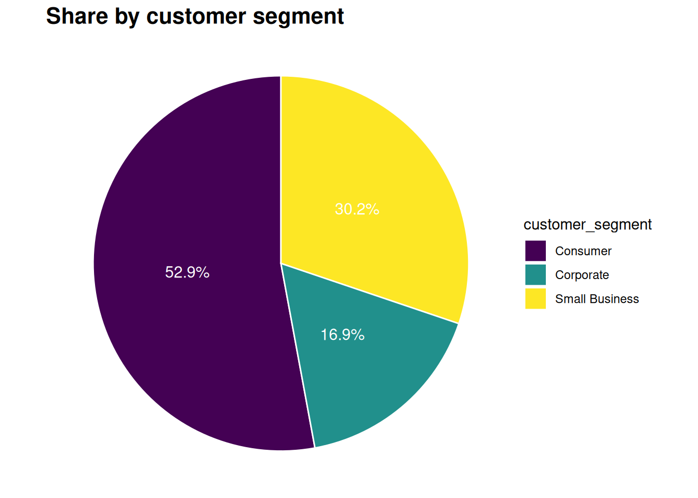
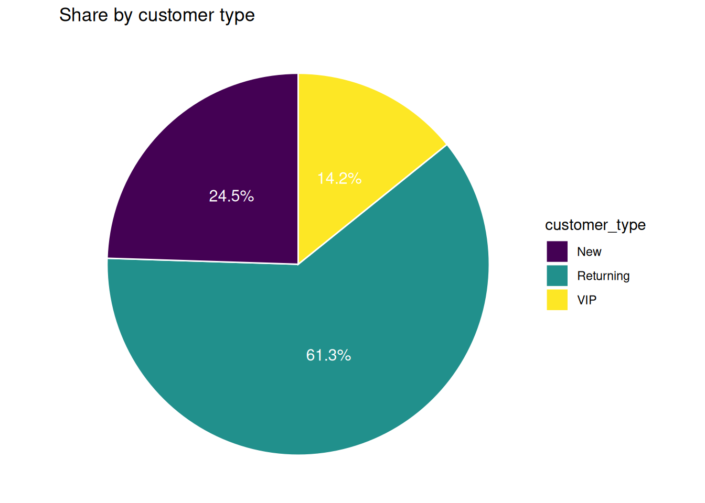
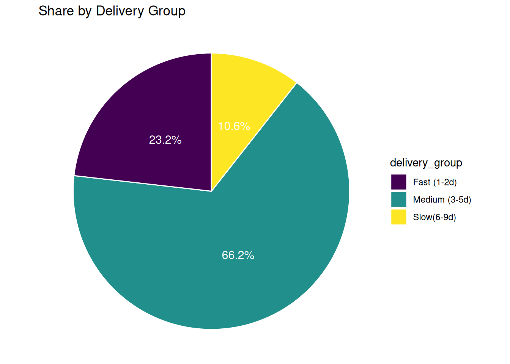
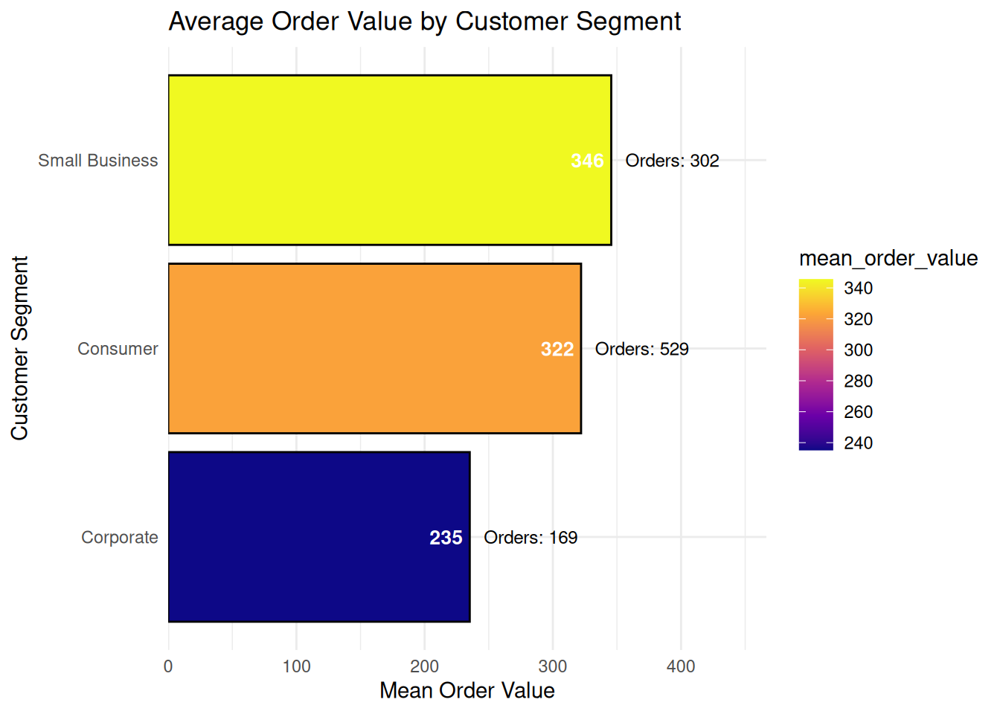
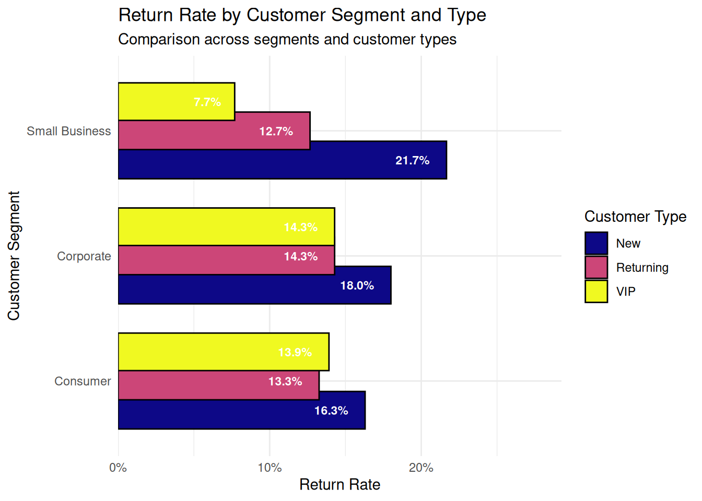
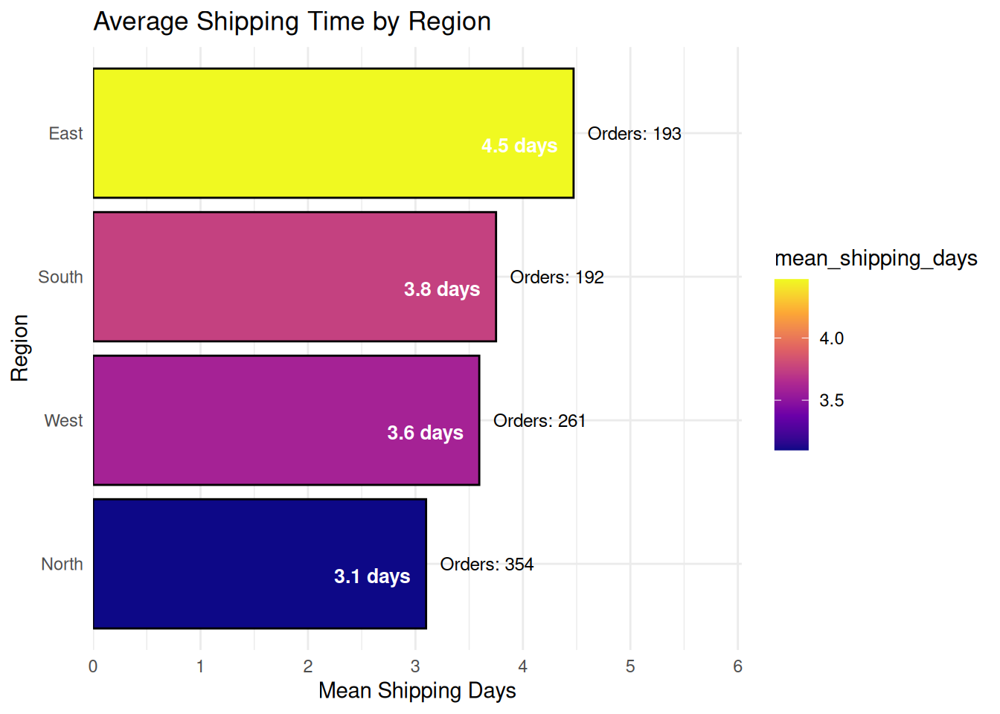
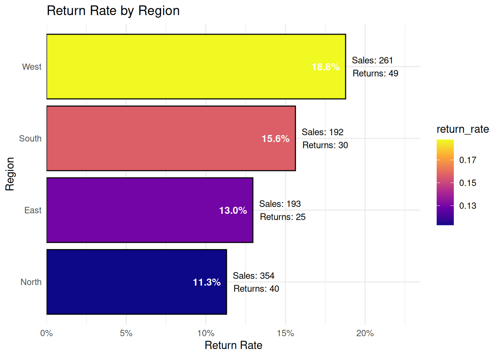

Detta projekt analyserar orderdata från ett e-handelsföretag i syfte att ge ledningen ett bättre beslutsunderlag. Analysen fokuserar på två huvudfrågor:
Hur skiljer sig returgrad mellan olika kategorier, regioner eller kundtyper?
Finns det tecken på att längre leveranstid hänger ihop med fler returer?
Hur påverkar rabatter returgraden?
Målet är att identifiera konkreta mönster i datan som företaget kan använda för att minska returer och förbättra kundupplevelsen.
Fråga 1 - Hur skiljer sig returgrad mellan olika kategorier, regioner eller kundtyper?
Tolkning
Diagrammet visar returfrekvensen för olika produktkategorier. Fashion har den högsta returgraden (16.2%), följt av Home (15.9%) och Beauty (15.1%). Electronics har en något lägre returgrad (13.2%), medan Sports har den lägsta returgraden (10.9%).
Returgrad mellan olika regioner
returns_by_region
# A tibble: 4 × 4
region count returns return_rate
<chr> <int> <int> <dbl>
1 West 261 49 0.188
2 South 192 30 0.156
3 East 193 25 0.130
4 North 354 40 0.113
p6
Tolkning
Diagrammet visar returfrekvensen för olika regioner. Regionen West har den högsta returgraden (18.8%), följt av South (15.6%) och East (13.0%). North har den lägsta returgraden (11.3%), vilket tyder på färre returer i denna region jämfört med övriga.
Tolkning
Diagrammet visar returfrekvensen för olika kundtyper. New customers har den högsta returgraden (18.0%), följt av VIP-kunder (13.4%) och Returning customers (13.2%). Detta indikerar att nya kunder tenderar att returnera produkter oftare än mer etablerade kunder. En möjlig förklaring kan vara att nya kunder har mindre erfarenhet av produkter eller att deras förväntningar inte alltid matchar verkligheten.
Fråga 2 - Finns det tecken på att längre leveranstid hänger ihop med fler returer?
Tolkning
Diagrammet visar returfrekvensen baserat på olika leveransgrupper. Slow (6–9 dagar) har den högsta returgraden (20.8%), följt av Medium (3–5 dagar) med 15.0%. Fast (1–2 dagar) har den lägsta returgraden (9.9%), vilket tyder på att snabbare leveranser är kopplade till färre returer. Detta indikerar att längre leveranstider kan påverka kundnöjdheten negativt och öka sannolikheten för returer. Kunder kan bli mer otåliga eller ändra sin uppfattning om produkten när leveransen tar längre tid. Slutsatsen är att leveranstid verkar vara en viktig faktor för returbenägenhet och kundupplevelse.
Checking the avg time for returned and not returned orders
Tolkning
Diagrammet visar genomsnittlig leveranstid för ordrar som returnerats jämfört med de som inte har returnerats. Ordrar som har returnerats (Yes) har en högre genomsnittlig leveranstid på 3.98 dagar, jämfört med 3.55 dagar för ordrar som inte returnerats (No). Medianvärdet är högre för returnerade ordrar (4 dagar) jämfört med icke returnerade ordrar (3 dagar). Detta tyder på att längre leveranstider kan vara kopplade till en högre sannolikhet för returer. En möjlig förklaring är att längre väntetid kan påverka kundnöjdheten negativt. Slutsatsen är att snabbare leveranser kan bidra till att minska returer och förbättra kundupplevelsen.
Fråga 3 - Hur påverkar rabatter returgraden?
Return rate by discount
return_by_discount
# A tibble: 4 × 4
discount_tier antal returer returgrad
<ord> <int> <int> <dbl>
1 No discount 96 9 0.0938
2 Low (1-10%) 647 87 0.134
3 Medium (11-25%) 253 46 0.182
4 High (25%+) 4 2 0.5
p14

Tolkning
Diagrammet visar hur returgraden varierar beroende på rabattnivå. Resultatet visar ett tydligt mönster där returgraden ökar med högre rabatter. Kunden utan rabatt (No discount) har den lägsta returgraden (9.4%), Låg rabatt (1–10%) visar en något högre returgrad (13.4%), Medium rabatt (11–25%) har en ännu högre returgrad (18.2%). Hög rabatt (25%+) har den högsta returgraden (50%), men detta resultat bör tolkas försiktigt eftersom antalet observationer i denna kategori är mycket litet (endast 4 ordrar).
Slutsatsen är att högre rabatter kan vara kopplade till ökad returbenägenhet. En möjlig förklaring är att större rabatter kan locka mer impulsköp Samtidigt kan små urval i högsta rabattgruppen påverka resultatets tillförlitlighet.
Additional analysis
Share by customer segment
share_segment
# A tibble: 3 × 3
customer_segment n share
<chr> <int> <dbl>
1 Consumer 529 0.529
2 Small Business 302 0.302
3 Corporate 169 0.169
p1

Tolkning
Diagrammet visar fördelningen av kunder mellan olika kundsegment. Resultatet visar att segmentet Consumer är det största (52,9%) Detta följs av Small Business (30,2%) och Corporate (16,9%). Detta indikerar att företaget främst har en konsumentdriven kundbas.
Share by customer type
share_customer_type
# A tibble: 3 × 3
customer_type n share
<chr> <int> <dbl>
1 Returning 613 0.613
2 New 245 0.245
3 VIP 142 0.142
p2

Tolkning
Detta diagram visar fördelningen av kundtyper i datasetet. Returning customers utgör den största andelen (61.3%), följt av New customers (24.5%) och VIP customers (14.2%). Detta indikerar att återkommande kunder dominerar kundbasen.
Tolkning
Diagrammet visar fördelningen av försäljning mellan olika produktkategorier. Electronics är den största kategorin (24.3%), följt av Fashion (23.5%), Home (20.7%), Beauty (15.9%) och Sports (15.6%). Detta visar att försäljningen är relativt jämnt fördelad mellan kategorierna men Electronics och Fashion dominerar något.
Share by delivery group
share_delivery_group
# A tibble: 3 × 3
delivery_group n share
<ord> <int> <dbl>
1 Medium (3-5d) 662 0.662
2 Fast (1-2d) 232 0.232
3 Slow(6-9d) 106 0.106
p4

Tolkning
Diagrammet visar fördelningen av ordrar baserat på leveranstid. Majoriteten av beställningarna tillhör kategorin Medium (3–5 dagar) med 66.2%. Därefter följer Fast (1–2 dagar) med 23.2%. Slow (6–9 dagar) utgör den minsta andelen med 10.6%.
Average Order value by customer segment
value_by_segment
# A tibble: 3 × 4
customer_segment count mean_order_value median_order_value
<chr> <int> <dbl> <dbl>
1 Small Business 302 346. 162.
2 Consumer 529 322. 161.
3 Corporate 169 235. 135.
p10

Tolkning
Diagrammet visar genomsnittligt och median ordervärde för olika kundsegment. Small Business har det högsta genomsnittliga ordervärdet (346), följt av Consumer (322).Corporate har det lägsta genomsnittliga ordervärdet (235). Medianvärdena är relativt lika mellan segmenten (cirka 135–162), vilket indikerar att skillnader i medelvärde kan påverkas av vissa höga ordervärden (outliers). Detta tyder på att Small Business-kunder tenderar att göra större köp,medan Corporate-kunder i genomsnitt handlar mindre per order. Slutsatsen är att olika kundsegment har olika köpbeteenden,vilket kan användas för att anpassa marknadsföring och erbjudanden.
Tolkning
Diagrammet visar returfrekvensen för olika ordervärdesnivåer. Lågprisordrar (Low) har den högsta returgraden (16.4%), följt av Medium (15.6%). Premium har en något lägre returgrad (13.6%), medan High har den lägsta returgraden (12.0%). Detta tyder på att kunder som köper billigare produkter tenderar att returnera varor oftare än kunder som köper dyrare produkter.
Combination of segment and customer type with return rate
returns_by_segment_type
# A tibble: 9 × 5
customer_segment customer_type count returns return_rate
<chr> <chr> <int> <int> <dbl>
1 Small Business New 60 13 0.217
2 Corporate New 50 9 0.18
3 Consumer New 135 22 0.163
4 Corporate Returning 105 15 0.143
5 Consumer Returning 279 37 0.133
6 Small Business Returning 229 29 0.127
7 Corporate VIP 14 2 0.143
8 Consumer VIP 115 16 0.139
9 Small Business VIP 13 1 0.0769
p12

Tolkning
Diagrammet visar returfrekvensen uppdelat efter både kundsegment och kundtyp. Det ger en mer detaljerad bild av kundbeteendet. Bland New customers har Small Business den högsta returgraden (21.7%), följt av Corporate (18.0%) och Consumer (16.3%). Detta indikerar att nya kunder inom Small Business-segmentet är särskilt benägna att returnera produkter. För Returning customers är returgraderna generellt lägre och mer stabila, där Corporate (14.3%), Consumer (13.3%) och Small Business (12.7%) ligger nära varandra.
VIP-kunder visar en varierande returgrad, där Corporate (14.3%) och Consumer (13.9%) ligger på liknande nivåer, medan Small Business har en betydligt lägre returgrad (7.7%).
Detta tyder på att kundtyp har en stark påverkan på returbenägenhet, särskilt för nya kunder, medan mer etablerade kunder (Returning och VIP) uppvisar mer stabilt beteende. Slutsatsen är att kombinationen av kundsegment och kundtyp ger viktiga insikter, där fokus bör ligga på att minska returer bland nya kunder, särskilt inom Small Business-segmentet.
Shipping days by region
shipping_by_region
# A tibble: 4 × 4
region count mean_shipping_days median_shipping_days
<chr> <int> <dbl> <dbl>
1 East 193 4.47 4
2 South 192 3.75 4
3 West 261 3.59 4
4 North 354 3.10 3
p11

Return rate by region
p6

Tolkning
Diagrammet visar genomsnittlig leveranstid för olika regioner. East har den längsta genomsnittliga leveranstiden (4.47 dagar), följt av South (3.75 dagar) och West (3.59 dagar). North har den kortaste leveranstiden (3.10 dagar), vilket indikerar mer effektiva leveranser i denna region. Slutsatsen är att förbättring av leveransprocesser i vissa regioner, särskilt East, kan bidra till bättre kundupplevelse och potentiellt minska returer.
Slutsatser och begränsningar
[…]
Metod
1. Dataförståelse
Datasetet innehåller orderdata och består av 1000 rader och 16 kolumner.
Numeriska variabler inkluderar exempelvis: quantity, unit_price, discount_pct och shipping_days.
Kategoriska variabler inkluderar: customer_segment, customer_type, region, city och product_category.
Det finns även en datumvariabel: order_date.
Datasetet inehöll vissa saknade värden i variablerna:
campaign_source 31st, discount_pct 27st, payment_method 25st, shipping_days 22st och city 21st. Resten av variablerna saknade inga värden.
För vår analys och valda frågeställningar om returgradoch leveranstid, är följande variabler särskilt viktiga:
returned = om ordern returnerats
shipping_days = leveranstid
product_category, region, customer_type = jämförelser mellan grupper
Används för att analysera returgrad och samband med leveranstid.
2. Datastädning och förberedelse
Datarensningen och förberedelsen av data gick igenom tre steg: standardisering och korrigering av data, hantering av saknade värden samt skapande av nya variabler.
Standardisering
I det första steget standardiserades kolumner för att säkerställa att datan var konsekvent:
order_id och customer_id rensades från mellanslag och gjordes om till versaler, eftersom samma order annars kunde ha räknats som två olika om den stavades på olika sätt.
order_date konverterades till date format så att det går att sortera och räkna på datum.
citykorrigerades manuellt för att hantera svenska specialtecken, annars hade samma stad dykt upp som flera olika städer i analysen.
campaign_source och payment_method rengjordes på samma sätt.
returned gjordes om från text (Yes/No) till siffror (1/0) för att kunna räkna ut returfrekvenser.
Hantering av saknade värden
För kategoriska kolumner som saknade värden (city, campaign_source, payment_method) fylldes dem i med det vanligaste förekommande värdet i respektive kolumn.
För numeriska kolumner (shipping_days, discount_pct) användes medianen istället för medelvärdet, eftersom medianen påverkas mindre av extremvärden och därför ger en mer representativ bild av datan.
Nya variabler
Fyra nya variabler skapades för att berika analysen:
order_value beräknar det faktiska ordervärdet efter rabatt.
order_value_tier delar in orders i fyra nivåer (Low, Medium, High och Premium) baserat på värde.
delivery_group grupperar leveranstiden i kategorier från snabb till mycket långsam.
discount_tier delar in rabatten i nivåer från ingen rabatt till hög rabatt.
Dessa variabler gör det enklare att se mönster och jämföra grupper i analysen.
3. Statistiska sammanfattningar
Datasetet innehåller 1 000 ordrar från 255 unika kunder fördelade över 5 produktkategorier.
Numeriska nyckeltal:
Medelvärdet för ordervärde order_value var 314 kr, medan medianen låg på 152 kr. Den stora skillnaden tyder på att ett antal höga ordrar drar upp medelvärdet.
Genomsnittligt antal produkter per order quantity var 1,36 med en median på 1.
Andelar: - Kundsegment:Consumer utgjorde den största gruppen (52,9%), följt av Small Business (30,2%) och slutligen Corporate (16,9%).
Kundtyp:Returning klart största typ med (61,3%), följt av New (24,5%) och VIP (14,2%).
Produktkategori:Electronics (24,3%) och Fashion (23,5%) var de största kategorierna, följt av Home (20,7%), Beauty (15,9%) och Sports (15,6%).
Leveranstid: Den vanligaste leveranstiden för kunder är Medium (3-5d) (66,2%), följt utav Fast (1-2d) (23,2%) och till sist Slow(6-9d) med (10.6%).
Returgrad och gruppjämförelser: Den totala returgraden var 14,4%.
Per produktkategori:Fashion hade högst returgrad (16,2%), följt av Home (15,9%) och Beauty (15,1%). Sports hade lägst returgrad (10,9%).
Per region:West hade klart högst returgrad (18,8%), medan North hade lägst (11,3%).
Per kundtyp: Nya kunder (New) returnerade oftast (18,0%), jämfört med VIP (13,4%) och Returning (13,2%).
Per leveransgrupp: Långsammare leverans hänger ihop med fler returer — Slow (6–9 dagar) hade (20,8%) returgrad, Medium (3–5 dagar) (15,0%) och Fast (1–2 dagar) (9,9%).
Per ordervärde: Baserat på tiering order_value_tier så är det lite vanligare att mindre ordrar oftare returneras. Low (16,4%) och Medium (15.6%) ligger något högre jämfört med Premium (13,6%) och High (12%)
Ordervärde per kundsegment:Small Business hade högst genomsnittligt ordervärde (346 kr), följt av Consumer (322 kr) och Corporate (235 kr).
Leveranstid per region:East hade längst genomsnittlig leveranstid (4,5 dagar), medan North hade kortast (3,1 dagar). South och West låg däremellan (3,8 respektive 3,6 dagar).